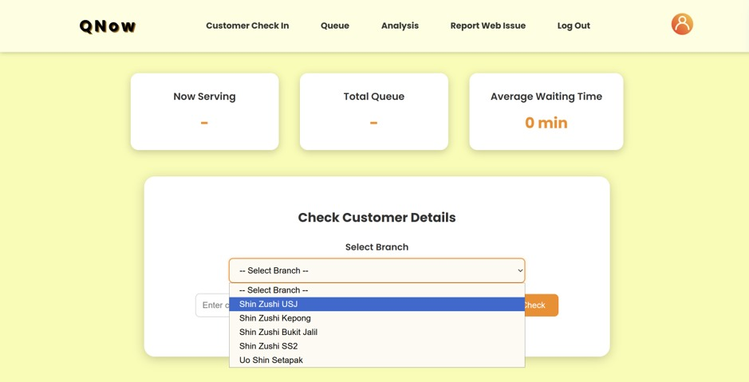

Branch overview
Choose a branch. Know what’s next.
Select a Shin Zushi branch to view its serving number, queue total, and estimated wait. Shin Zushi USJ is the testing reference.
Branch selection · Now serving · Queue total · Estimated wait